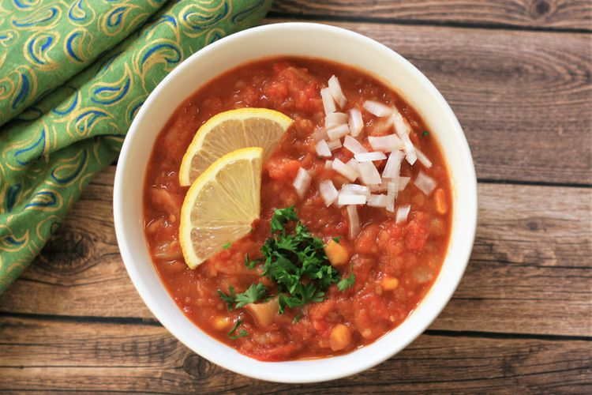

Pav Bhaji

Description
I made this after trying different methods over a few years.
It all came together so well.
The flavor and texture was amazing.
You really need to add water at the end and not be scared that it will ruin the dish, it will not!
You need a fairly runny consistency for the best pav bhaji.
Garnish with fresh chopped tomatoes, onions, and fresh cilantro if desired.
Serve with toasted white bread or bread rolls.
Ingredients
- Oil
- Onion
- Salt
- Garlic
- Water
- Pav Bhaji Masala
- Diced Tomatoes
- Chilly Powder
- Ginger
- Lemon Juice
Steps
- Heat 2 tablespoon oil in a saucepan.
Add onion and Salt.
Add Garlic. Cook and stir.
Bring to a boil.
Reduce heat and simmer until flavour combine.
-
Add Tomatoes, Potatoes, and corn to a saucepan.
Season with chilly powder, coriander and ginger.
Bring to a boil.
Reduce heat and simmer for 15 minutes.
Mash with spatula.
-
Add water to give a runny consistency.
Add remaining oil and butter until melted.
Divide into serving bowls and sprinkle masala over top.
Back